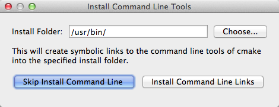
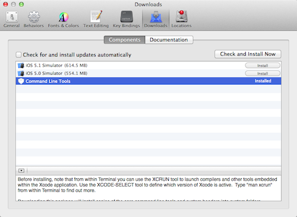
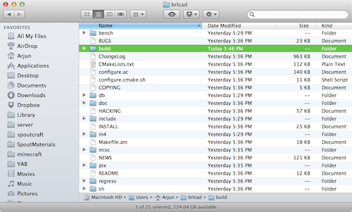
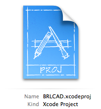

Note: Some users have been experiencing problems running through this process on Mac OS X Mountain Lion, which dropped support for X11. The problems have been noted and are being worked on.
Compiling BRL-CAD with Xcode on Mac OS X
An already built and running version of BRL-CAD for Mac OS X can be downloaded from here, or these steps will guide you through the process of how to compiling it yourself.
Obtain Dev Tools
Download the latest version of CMake for Mac OS X. Once downloaded, follow the instructions to install CMake and be sure to select the box for installing the CMake Command Line tools:

The latest version of the BRL-CAD source is also required, which can be obtained here.
You will also need Xcode, which can be downloaded from the Mac App Store. When installing, make sure you install the unix development command-line tools. Or if Xcode is already installed on your system, you can install the command line tools (or double-check to make sure you have them) by navigating to Xcode Preferences > Downloads and in the components tab, you should see Command Line Tools:

Compiling
Navigate to the BRL-CAD source directory you downloaded and create a new folder titled "brlcad-build." This is where we will store the configured build:

 Open Terminal (in /User/Applications/Utilities) and cd to the location of the BRL-CAD source folder (Note: you can type cd, press the spacebar, and then drag the brlcad folder to copy its search path):
cd brlcad-7.22.0
Now, we create a BRL-CAD Xcode project that we can use to compile BRL-CAD: (this may take some time)
cd brlcad-build
cmake .. -G Xcode
Finishing
Open the resulting BRLCAD.xcodeproj file with Xcode and press Build and Run. Thats it!